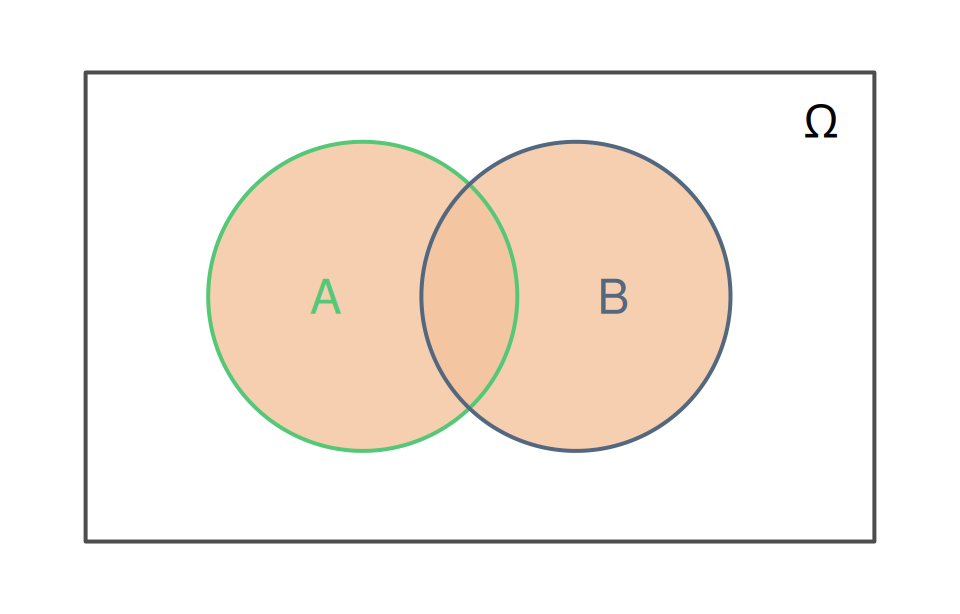
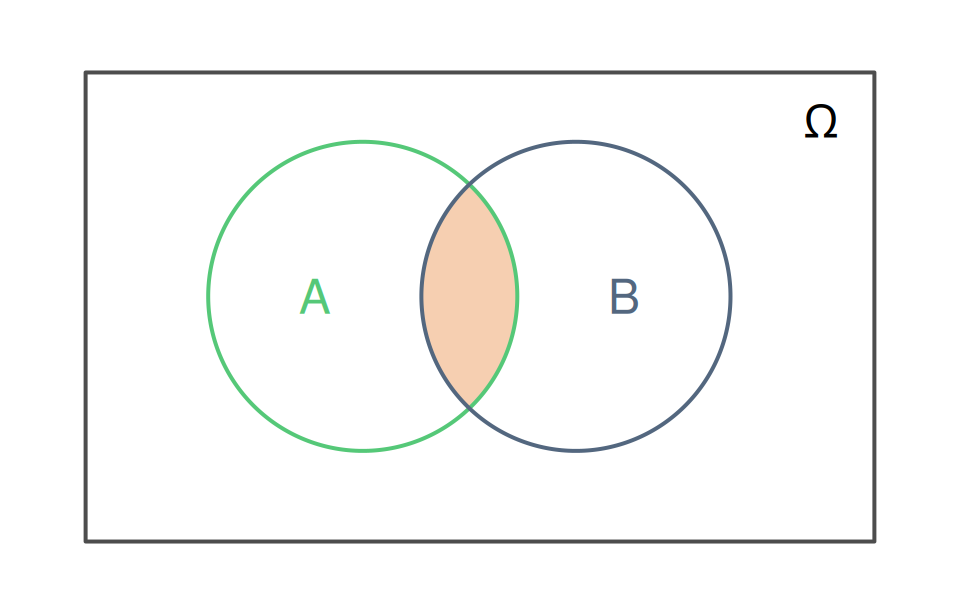
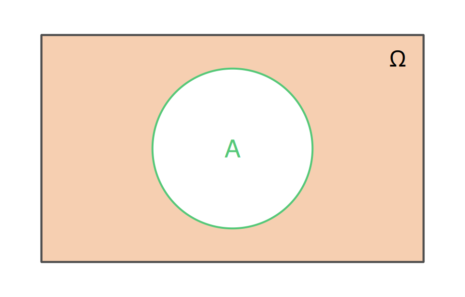
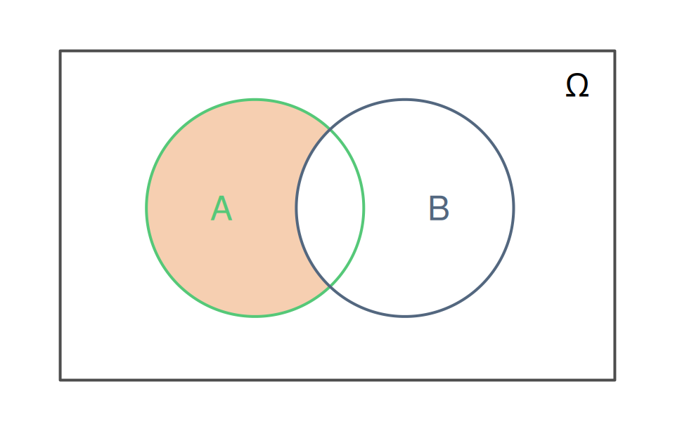
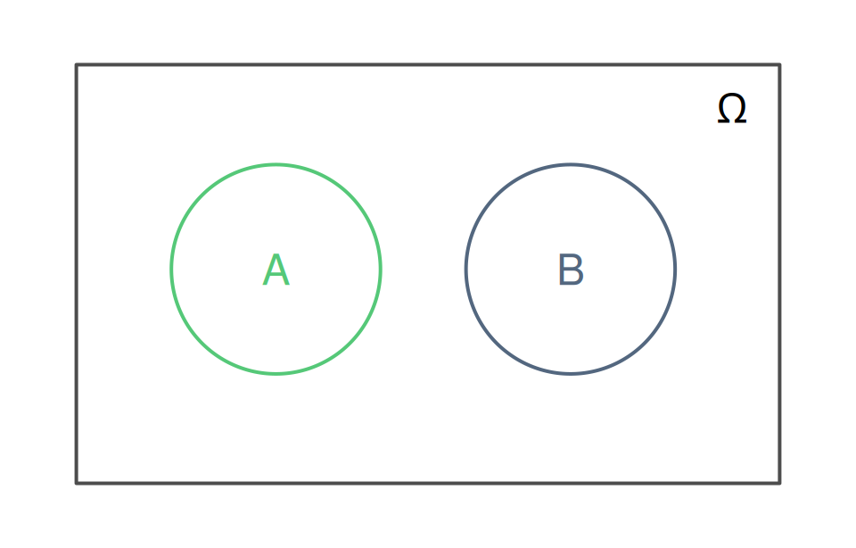
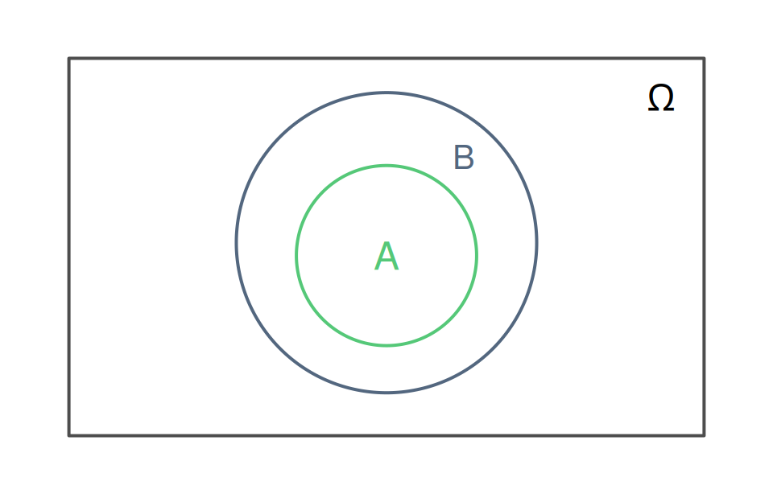
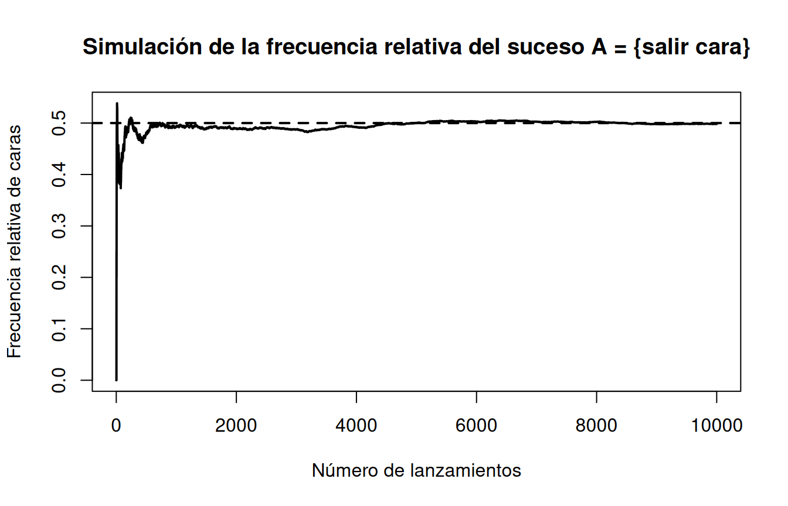

Probabilidad
Antes de aprender a calcular probabilidades complicadas, debemos saber qué propiedades mínimas debe cumplir cualquier asignación de probabilidades para que sea coherente.
En este tema introduciremos los conceptos básicos necesarios para formular la axiomática de Kolmogorov: experimentos aleatorios, espacio muestral, sucesos y operaciones con sucesos.
Conceptos previos
Experimentos aleatorios, espacio muestral y sucesos
Definición de experimento. Se dice que un experimento o prueba es una acción que se realiza con el propósito de recoger algún tipo de observación sobre sus resultados.
Los experimentos pueden ser determinísticos o aleatorios.
Experimentos determinísticos. Un experimento es determinístico si, al repetirlo en idénticas condiciones, siempre presenta el mismo resultado. En estos fenómenos es posible conocer el resultado final si se conocen el estado inicial y las condiciones de realización.
Por ejemplo:
- Si un coche circula a velocidad constante de \(80\) km/h, la distancia recorrida en \(2\) horas es
\[ e = v\cdot t = 80\cdot 2 = 160 \text{ km}. \]
- Si \(1\) km son \(1000\) m, entonces
\[ 3.5 \text{ km} = 3500 \text{ m}. \]
- A presión atmosférica normal, el agua pura hierve a \(100^\circ\)C.
Experimentos aleatorios. Un experimento es aleatorio si su resultado es impredecible; es decir, aunque el experimento se repita de la misma forma y bajo idénticas condiciones, puede dar lugar a diferentes resultados.
Esto lleva a plantear el problema de medir la incertidumbre que aparece en estos fenómenos. El cálculo de probabilidades se encarga de ello.
Definición de suceso elemental. Un suceso elemental es cada posible resultado que puede observarse tras la realización de un experimento aleatorio y que no puede descomponerse en otros resultados más simples.
Definición de espacio muestral. El espacio muestral de un experimento aleatorio es el conjunto formado por todos los posibles sucesos elementales de dicho experimento. Se denota por \(\Omega\).
Existen varios tipos de espacios muestrales.
Espacio muestral finito. Se sabe cuántos sucesos elementales lo componen.
Por ejemplo, en el experimento aleatorio consistente en lanzar un dado,
\[ \Omega = \{1,2,3,4,5,6\}. \]
Espacio muestral infinito numerable. Está compuesto por infinitos sucesos elementales que pueden ponerse en correspondencia con los números naturales.
Por ejemplo, consideramos el experimento aleatorio consistente en lanzar una moneda hasta que salga cara por primera vez. Si denotamos por \(C\) el resultado “cara” y por \(X\) el resultado “cruz”, entonces
\[ \Omega = \{C, XC, XXC, XXXC, XXXXC,\ldots\}. \]
Este espacio muestral es numerable, ya que sus elementos pueden enumerarse mediante los números naturales:
\[ \Omega = \{X^{n-1}C \colon n=1,2,3,\ldots\}. \]
Espacio muestral infinito no numerable. Está compuesto por infinitos sucesos elementales que no pueden ponerse en correspondencia con los números naturales.
Por ejemplo, si el experimento aleatorio consiste en elegir un número real del intervalo \([0,1]\), entonces
\[ \Omega = [0,1]. \]
En este intervalo hay infinitos números reales, como \(0\), \(0.25\), \(\frac{\sqrt{2}}{2}\), \(\frac{\pi}{4}\), \(0.999\), etc.
Definición de suceso. Un suceso es cualquier resultado o conjunto de resultados del experimento. Está compuesto por uno o más sucesos elementales.
Por ejemplo, en el experimento aleatorio consistente en lanzar un dado, el suceso
\[ A = \text{``obtener un número par''} \]
viene dado por
\[ A = \{2,4,6\}. \]
Definición de suceso seguro. Un suceso seguro es aquel que está formado por todos los resultados posibles del experimento. Por tanto, coincide con el propio espacio muestral \(\Omega\).
Por ejemplo, en el experimento aleatorio consistente en lanzar un dado, el suceso
\[ B = \text{``obtener un número menor que } 7\text{''} \]
es un suceso seguro, ya que
\[ B = \{1,2,3,4,5,6\} = \Omega. \]
Definición de suceso imposible. Un suceso imposible es aquel que no puede ocurrir. Se representa mediante el conjunto vacío, \(\varnothing\).
Por ejemplo, en el experimento aleatorio consistente en lanzar un dado, el suceso
\[ C = \text{``obtener un } 8\text{''} \]
es un suceso imposible, ya que el \(8\) no aparece en un dado ordinario de seis caras. Por tanto,
\[ C = \varnothing. \]
Ejercicio 1 Considera el experimento aleatorio consistente en lanzar una moneda dos veces. Denotamos por \(C\) el resultado “cara” y por \(X\) el resultado “cruz”.
- Escribe el espacio muestral.
- Escribe el suceso \(A=\) “obtener exactamente una cara”.
- Escribe un suceso seguro.
- Escribe un suceso imposible.
Operaciones con sucesos
En lo que sigue, consideraremos sucesos asociados a un mismo experimento aleatorio. Las operaciones entre sucesos permiten construir nuevos sucesos a partir de otros.
Unión de sucesos. Si \(A\) y \(B\) son dos sucesos, la unión \(A\cup B\) es el suceso formado por todos los sucesos elementales que pertenecen a \(A\), a \(B\) o a ambos.
Por ejemplo, si
\[ \Omega = \{1,2,3,4,5,6\}, \qquad A = \{1,4\}, \qquad B = \{2,4,6\}, \]
entonces
\[ A\cup B = \{1,2,4,6\}. \]
Intersección de sucesos. Si \(A\) y \(B\) son dos sucesos, la intersección \(A\cap B\) es el suceso formado por todos los sucesos elementales que pertenecen simultáneamente a \(A\) y a \(B\).

Por ejemplo, si
\[ A = \{1,4\}, \qquad B = \{2,4,6\}, \]
entonces
\[ A\cap B = \{4\}. \]
NotaObservación
En probabilidad, la palabra “o” suele estar asociada a la unión de sucesos, mientras que la palabra “y” está asociada a la intersección.
Así,
\[ A\cup B \]
significa que ocurre \(A\), ocurre \(B\) o ocurren ambos.
En cambio,
\[ A\cap B \]
significa que ocurren \(A\) y \(B\) simultáneamente.
Complementario de un suceso. Dado un suceso \(A\), se define el complementario de \(A\), y se denota por \(\overline{A}\) o por \(A^c\), como el suceso formado por todos los sucesos elementales del espacio muestral que no pertenecen a \(A\).

Por ejemplo, si
\[ \Omega = \{1,2,3,4,5,6\}, \qquad A = \{1,4\}, \]
entonces
\[ \overline{A} = \{2,3,5,6\}. \]
Diferencia de sucesos. Si \(A\) y \(B\) son dos sucesos, la diferencia \(A-B\) es el suceso formado por todos los sucesos elementales que pertenecen a \(A\) y no pertenecen a \(B\).
Además, se verifica que
\[ A-B = A\cap \overline{B}. \]

Sucesos incompatibles. Se dice que dos sucesos \(A\) y \(B\) son incompatibles si al ocurrir uno no puede ocurrir el otro. Es decir,
\[ A\cap B = \varnothing. \]

Inclusión de sucesos. Dados dos sucesos \(A\) y \(B\), se dice que el suceso \(A\) está contenido en el suceso \(B\), y se denota por \(A\subseteq B\), si todos los sucesos elementales de \(A\) también pertenecen a \(B\).

Por ejemplo, si
\[ A = \{2,4\}, \qquad B = \{2,4,6\}, \]
entonces
\[ A\subseteq B. \]
Ejercicio 2 Considera el experimento aleatorio consistente en extraer una bola de una urna que contiene bolas rojas, azules, verdes, amarillas y negras. Observamos únicamente el color de la bola extraída. Por tanto, el espacio muestral es
\[ \Omega = \{R,A,V,Am,N\}, \]
donde \(R\) representa rojo, \(A\) azul, \(V\) verde, \(Am\) amarillo y \(N\) negro.
Sean los sucesos
\[ A = \{R,A,V\}, \qquad B = \{V,Am,N\}. \]
Calcula:
- \(A\cup B\).
- \(A\cap B\).
- \(\overline{A}\).
- \(A-B\).
- \(B-A\).
Propiedades de las operaciones con sucesos
A continuación se recogen algunas propiedades útiles de las operaciones con sucesos. Sean \(A\), \(B\) y \(C\) sucesos de un mismo espacio muestral \(\Omega\).
| Propiedad | Unión | Intersección |
|---|---|---|
| Elemento neutro | \(A\cup \varnothing = A\) | \(A\cap \Omega = A\) |
| Elemento absorbente | \(A\cup \Omega = \Omega\) | \(A\cap \varnothing = \varnothing\) |
| Idempotentencia | \(A\cup A = A\) | \(A\cap A = A\) |
| Conmutativa | \(A\cup B = B\cup A\) | \(A\cap B = B\cap A\) |
| Asociativa | \((A\cup B)\cup C = A\cup(B\cup C)\) | \((A\cap B)\cap C = A\cap(B\cap C)\) |
| Distributiva | \((A\cup B)\cap C = (A\cap C)\cup(B\cap C)\) | \((A\cap B)\cup C = (A\cup C)\cap(B\cup C)\) |
| Leyes de De Morgan | \(\overline{A\cup B}=\overline{A}\cap\overline{B}\) | \(\overline{A\cap B}=\overline{A}\cup\overline{B}\) |
Álgebra de sucesos
Antes de introducir la axiomática de Kolmogorov, conviene precisar sobre qué tipo de objetos vamos a definir la probabilidad. En un experimento aleatorio con espacio muestral \(\Omega\), los sucesos son subconjuntos de \(\Omega\). Por ello, necesitamos trabajar con familias de subconjuntos de \(\Omega\).
Definición de conjunto de partes. Se llama conjunto de partes o conjunto potencia de \(\Omega\), y se denota por \(\mathcal{P}(\Omega)\), al conjunto formado por todos los subconjuntos de \(\Omega\). Es decir,
\[ \mathcal{P}(\Omega)=\{A \colon A\subseteq \Omega\}. \]
Equivalentemente,
\[ A\in\mathcal{P}(\Omega) \iff A\subseteq \Omega. \]
Por tanto, \(\mathcal{P}(\Omega)\) contiene todos los sucesos que se podrían considerar a partir del espacio muestral \(\Omega\).
TipEjemplo
Si
\[ \Omega=\{1,2\}, \]
entonces los subconjuntos de \(\Omega\) son
\[ \varnothing,\quad \{1\},\quad \{2\},\quad \{1,2\}. \]
Por tanto,
\[ \mathcal{P}(\Omega)=\{\varnothing,\{1\},\{2\},\{1,2\}\}. \]
Definición de clase de conjuntos. Se llama clase de conjuntos, familia de conjuntos o colección de conjuntos a cualquier subconjunto de \(\mathcal{P}(\Omega)\). Es decir, una clase de subconjuntos de \(\Omega\) es un conjunto \(\mathcal{C}\) tal que
\[ \mathcal{C}\subseteq \mathcal{P}(\Omega). \]
Los elementos de \(\mathcal{C}\) son, por tanto, subconjuntos de \(\Omega\).
TipEjemplo
Si
\[ \Omega=\{1,2,3\}, \]
entonces
\[ \mathcal{P}(\Omega)=\{\varnothing,\{1\},\{2\},\{3\},\{1,2\},\{1,3\},\{2,3\},\Omega\}. \]
Una posible clase de subconjuntos de \(\Omega\) es
\[ \mathcal{C}=\{\varnothing,\{1\},\{1,2\},\Omega\}. \]
En efecto,
\[ \mathcal{C}\subseteq \mathcal{P}(\Omega). \]
Es decir, \(\mathcal{C}\) no tiene por qué contener todos los subconjuntos de \(\Omega\); basta con que todos sus elementos sean subconjuntos de \(\Omega\).
Definición de clase cerrada respecto de una operación. Se dice que una clase de conjuntos \(\mathcal{C}\) es cerrada respecto de una determinada operación si, al aplicar esa operación a elementos de \(\mathcal{C}\), el conjunto resultante también pertenece a \(\mathcal{C}\).
Por ejemplo, si la operación es la unión, diremos que \(\mathcal{C}\) es cerrada respecto de uniones si, para cualesquiera \(A,B\in\mathcal{C}\), se verifica que
\[ A\cup B\in\mathcal{C}. \]
Si la operación es la intersección, diremos que \(\mathcal{C}\) es cerrada respecto de intersecciones si, para cualesquiera \(A,B\in\mathcal{C}\), se verifica que
\[ A\cap B\in\mathcal{C}. \]
Si la operación es el complementario, diremos que \(\mathcal{C}\) es cerrada respecto del complementario si, para todo \(A\in\mathcal{C}\), se verifica que
\[ \overline{A}\in\mathcal{C}. \]
TipEjemplo
Sea
\[ \Omega=\{1,2,3\} \]
y consideremos la clase
\[ \mathcal{C}=\{\varnothing,\Omega\}. \]
Esta clase es cerrada respecto de la unión, ya que
\[ \varnothing\cup\varnothing=\varnothing,\qquad \varnothing\cup\Omega=\Omega,\qquad \Omega\cup\Omega=\Omega, \]
y todos los resultados pertenecen a \(\mathcal{C}\).
También es cerrada respecto de la intersección, ya que
\[ \varnothing\cap\varnothing=\varnothing,\qquad \varnothing\cap\Omega=\varnothing,\qquad \Omega\cap\Omega=\Omega. \]
Además, es cerrada respecto del complementario, porque
\[ \overline{\varnothing}=\Omega \qquad \text{y} \qquad \overline{\Omega}=\varnothing. \]
TipEjemplo de clase no cerrada
Sea
\[ \Omega=\{1,2,3\} \]
y consideremos la clase
\[ \mathcal{C}=\{\{1\},\{2\}\}. \]
Entonces \(\mathcal{C}\) no es cerrada respecto de la unión, porque
\[ \{1\}\cup\{2\}=\{1,2\}, \]
pero
\[ \{1,2\}\notin\mathcal{C}. \]
Una vez introducida la idea de clase de subconjuntos de \(\Omega\), podemos definir qué significa que una de estas clases tenga estructura de álgebra.
Definición de álgebra de sucesos. Sea \(\Omega\) un espacio muestral. Una clase no vacía de subconjuntos de \(\Omega\),
\[ \mathcal{C}\subseteq \mathcal{P}(\Omega), \qquad \mathcal{C}\neq \varnothing, \]
se dice que es un álgebra de sucesos sobre \(\Omega\) si verifica las dos propiedades siguientes:
- Es cerrada respecto de uniones finitas; es decir, si \(A_1,\ldots,A_n\in\mathcal{C}\), entonces
\[ \bigcup_{i=1}^{n} A_i \in \mathcal{C}. \]
- Es cerrada respecto de la formación de complementarios; es decir, si \(A\in\mathcal{C}\), entonces
\[ \overline{A}\in\mathcal{C}. \]
Aquí \(\overline{A}\) representa el complementario de \(A\) respecto del espacio muestral \(\Omega\).
NotaInterpretación
Un álgebra de sucesos es una familia de sucesos suficientemente estable como para poder operar con ellos sin salirnos de la propia familia.
Propiedades. Si \(\mathcal{C}\subseteq\mathcal{P}(\Omega)\) es un álgebra de sucesos sobre \(\Omega\), entonces se verifican las siguientes propiedades:
- \(\mathcal{C}\) es cerrada respecto de intersecciones finitas; es decir, si \(A_1,\ldots,A_n\in\mathcal{C}\), entonces
\[ \bigcap_{i=1}^{n} A_i \in \mathcal{C}. \]
- El espacio muestral \(\Omega\) pertenece a \(\mathcal{C}\) y el suceso imposible \(\varnothing\) también pertenece a \(\mathcal{C}\):
\[ \Omega\in\mathcal{C}, \qquad \varnothing\in\mathcal{C}. \]
- \(\mathcal{C}\) es cerrada respecto de diferencias; es decir, si \(A_1,A_2\in\mathcal{C}\), entonces
\[ A_1-A_2\in\mathcal{C}. \]
TipEjemplo
Sea
\[ \Omega=\{1,2,3\} \]
y consideremos la clase
\[ \mathcal{C}=\{\varnothing,\{1\},\{2,3\},\Omega\}. \]
Esta clase es un álgebra de sucesos sobre \(\Omega\).
En efecto, es no vacía y todos sus elementos son subconjuntos de \(\Omega\). Además, es cerrada respecto de complementarios, ya que
\[ \overline{\varnothing}=\Omega,\qquad \overline{\Omega}=\varnothing, \]
y
\[ \overline{\{1\}}=\{2,3\},\qquad \overline{\{2,3\}}=\{1\}. \]
También es cerrada respecto de uniones finitas. Por ejemplo,
\[ \{1\}\cup\{2,3\}=\Omega, \]
y
\[ \{1\}\cup\varnothing=\{1\}. \]
En todos los casos, el resultado vuelve a pertenecer a \(\mathcal{C}\).
TipEjemplo de clase que no es álgebra
Sea
\[ \Omega=\{1,2,3\} \]
y consideremos la clase
\[ \mathcal{D}=\{\varnothing,\{1\},\Omega\}. \]
Esta clase no es un álgebra de sucesos sobre \(\Omega\), porque no es cerrada respecto de complementarios.
En efecto,
\[ \overline{\{1\}}=\{2,3\}, \]
pero
\[ \{2,3\}\notin\mathcal{D}. \]
La noción de álgebra de sucesos es suficiente cuando trabajamos con espacios muestrales finitos. Sin embargo, en muchos problemas de probabilidad aparecen espacios muestrales infinitos, por lo que necesitamos una estructura algo más fuerte: la de \(\sigma\)-álgebra.
Definición de \(\sigma\)-álgebra de sucesos. Sea \(\Omega\) un espacio muestral. Una clase no vacía de subconjuntos de \(\Omega\),
\[ \mathcal{A}\subseteq \mathcal{P}(\Omega), \qquad \mathcal{A}\neq \varnothing, \]
se dice que es una \(\sigma\)-álgebra de sucesos sobre \(\Omega\) si verifica las dos propiedades siguientes:
- Es cerrada respecto de uniones numerables; es decir, si
\[ A_1,A_2,\ldots,A_n,\ldots \in \mathcal{A}, \]
entonces
\[ \bigcup_{n=1}^{\infty} A_n \in \mathcal{A}. \]
- Es cerrada respecto de la formación de complementarios; es decir, si \(A\in\mathcal{A}\), entonces
\[ \overline{A}\in\mathcal{A}. \]
Aquí \(\overline{A}\) representa el complementario de \(A\) respecto del espacio muestral \(\Omega\).
NotaInterpretación
Una \(\sigma\)-álgebra de sucesos es una familia de sucesos suficientemente estable como para poder trabajar con operaciones numerables.
La diferencia principal con un álgebra de sucesos es que una \(\sigma\)-álgebra exige que la familia sea cerrada respecto de uniones numerables, no solo respecto de uniones finitas.
Una vez definida la noción de \(\sigma\)-álgebra, podemos precisar cuál es la estructura matemática sobre la que se define una probabilidad.
Definición de espacio medible. Sea \(\Omega\) un conjunto no vacío y sea \(\mathcal{A}\) una \(\sigma\)-álgebra de subconjuntos de \(\Omega\). Entonces el par
\[ (\Omega,\mathcal{A}) \]
se denomina espacio medible.
En el contexto de la probabilidad, \(\Omega\) representa el espacio muestral asociado a un experimento aleatorio, mientras que \(\mathcal{A}\) representa la familia de sucesos a los que podremos asignar una probabilidad.
NotaInterpretación
Un espacio medible \((\Omega,\mathcal{A})\) está formado por dos elementos:
- El conjunto \(\Omega\), que contiene todos los posibles resultados del experimento.
- La \(\sigma\)-álgebra \(\mathcal{A}\), que contiene los sucesos cuya probabilidad queremos poder medir.
Por tanto, no se asigna probabilidad directamente a cualquier objeto, sino a los sucesos que pertenecen a la familia \(\mathcal{A}\).
En consecuencia, si \(\Omega\) es el espacio muestral de un experimento aleatorio y \(\mathcal{A}\) es una \(\sigma\)-álgebra de subconjuntos de \(\Omega\) que contiene todos los sucesos de interés, entonces el par
\[ (\Omega,\mathcal{A}) \]
proporciona el marco adecuado para cuantificar la incertidumbre asociada a dichos sucesos mediante una medida: la probabilidad.
Definición axiomática de la probabilidad
Antes de introducir la definición axiomática de la probabilidad, conviene recordar dos formas clásicas de interpretar la probabilidad: la definición clásica y la definición frecuentista. Ambas resultan útiles desde el punto de vista intuitivo, aunque presentan limitaciones. La formulación axiomática de Kolmogorov permite superar estas limitaciones y proporcionar una definición general y rigurosa.
Definición clásica de probabilidad
La definición clásica de probabilidad se aplica a experimentos aleatorios con espacio muestral finito en los que todos los sucesos elementales se consideran equiprobables.
Sea un experimento aleatorio con espacio muestral finito
\[ \Omega=\{A_1,\dots,A_n\}, \]
y supongamos que todos los sucesos elementales tienen la misma probabilidad de ocurrir. Entonces, para cualquier suceso
\[ B=\{A_{i_1},\dots,A_{i_m}\}\subseteq \Omega, \]
se define la probabilidad de \(B\) como
\[ P(B)=\frac{\text{número de casos favorables a }B}{\text{número total de casos posibles}} =\frac{m}{n}. \]
Esta definición solo puede utilizarse cuando:
- el espacio muestral es finito;
- los resultados elementales son equiprobables;
- es posible contar los casos favorables y los casos posibles.
TipEjemplo
Considera el experimento aleatorio consistente en extraer una bola de una urna que contiene \(5\) bolas: \(3\) rojas, \(1\) blanca y \(1\) azul. Suponemos que todas las bolas tienen la misma probabilidad de ser extraídas.
Si denotamos por \(R\) el suceso “extraer una bola roja”, por \(B\) el suceso “extraer una bola blanca” y por \(Az\) el suceso “extraer una bola azul”, entonces:
- la probabilidad de extraer una bola roja es
\[ P(R)=\frac{3}{5}; \]
- la probabilidad de extraer una bola blanca o azul es
\[ P(B\cup Az)=\frac{2}{5}; \]
- la probabilidad de no extraer una bola roja es
\[ P(\overline{R})=\frac{2}{5}. \]
NotaObservación
La definición clásica es muy útil en experimentos sencillos, como el lanzamiento de monedas, dados o la extracción de bolas de una urna. Sin embargo, no puede aplicarse directamente a experimentos con infinitos resultados posibles ni a situaciones en las que no tenga sentido suponer equiprobabilidad.
Definición frecuentista de probabilidad
La definición frecuentista de probabilidad interpreta la probabilidad de un suceso en términos de su comportamiento al repetir muchas veces el experimento aleatorio en las mismas condiciones.
Sea \(A\subseteq\Omega\) un suceso y supongamos que repetimos el experimento \(N\) veces en idénticas condiciones. Si \(N_A\) representa el número de veces que ocurre el suceso \(A\), la frecuencia relativa de \(A\) en esas \(N\) repeticiones se define por
\[ f_N(A)=\frac{N_A}{N}. \]
La probabilidad de \(A\) se interpreta entonces como el valor al que tiende la frecuencia relativa cuando el número de repeticiones crece indefinidamente:
\[ P(A)=\lim_{N\to\infty} f_N(A), \]
si dicho límite existe.
TipEjemplo
Consideremos el experimento aleatorio consistente en lanzar una moneda y sea
\[ A=\{\text{salir cara}\}. \]
Si repetimos el experimento muchas veces, la frecuencia relativa de caras se define como
\[ f_N(A)=\frac{\text{número de caras en }N\text{ lanzamientos}}{N}. \]
A medida que aumenta el número de lanzamientos, esta frecuencia relativa tiende a estabilizarse alrededor de \(0.5\). Por tanto, la probabilidad de obtener cara se interpreta como
\[ P(A)=\frac12. \]
Para ilustrar esta idea, podemos realizar una simulación.

También podemos observar algunos valores concretos de la frecuencia relativa:
| Número.de.lanzamientos | Número.de.caras | Frecuencia.relativa |
|---|---|---|
| 10 | 4 | 0.4000 |
| 100 | 43 | 0.4300 |
| 1000 | 494 | 0.4940 |
| 10000 | 4983 | 0.4983 |
NotaObservación
La definición frecuentista resulta especialmente natural cuando el experimento puede repetirse muchas veces bajo las mismas condiciones. No obstante, presenta dificultades cuando el experimento no es repetible o cuando no es posible justificar rigurosamente la existencia del límite anterior.
Definición axiomática de la probabilidad (Kolmogorov)
Las definiciones clásica y frecuentista son útiles desde el punto de vista intuitivo, pero no proporcionan un marco suficientemente general. Para ello se introduce la definición axiomática de la probabilidad, debida a Kolmogorov.
Sea
\[ (\Omega,\mathcal{A}) \]
un espacio medible. Una probabilidad es una aplicación
\[ P:\mathcal{A}\to\mathbb{R} \]
que asigna a cada suceso medible \(A\in\mathcal{A}\) un número real \(P(A)\) y verifica los siguientes axiomas:
No negatividad: \[ P(A)\geq 0,\qquad \forall A\in\mathcal{A}. \]
Normalización: \[ P(\Omega)=1. \]
Aditividad numerable: si \(\{A_n\}_{n\in\mathbb{N}}\) es una sucesión numerable de sucesos incompatibles dos a dos, es decir,
\[ A_i\cap A_j=\varnothing,\qquad \forall i\neq j, \]
entonces
\[ P\left(\bigcup_{n=1}^{\infty} A_n\right)=\sum_{n=1}^{\infty}P(A_n). \]
NotaInterpretación
La definición axiomática no dice cómo “calcular” directamente una probabilidad, sino cuáles son las propiedades que debe cumplir cualquier función que quiera representar de forma coherente la incertidumbre.
TipEjemplo
Consideremos el experimento aleatorio consistente en lanzar una moneda dos veces, con espacio muestral
\[ \Omega=\{CC,CX,XC,XX\}. \]
Tomamos como \(\sigma\)-álgebra la colección completa de subconjuntos de \(\Omega\):
\[ \mathcal{A}=\mathcal{P}(\Omega). \]
Definimos una probabilidad \(P:\mathcal{A}\to\mathbb{R}\) asignando probabilidad \(\frac14\) a cada suceso elemental. Por ejemplo,
\[ P(\{CC\})=P(\{CX\})=P(\{XC\})=P(\{XX\})=\frac14. \]
Entonces, si
\[ A=\{\text{obtener exactamente una cara}\}=\{CX,XC\}, \]
se tiene
\[ P(A)=P(\{CX,XC\})=P(\{CX\})+P(\{XC\})=\frac14+\frac14=\frac12. \]
Asimismo,
\[ P(\Omega)=1, \]
y si dos sucesos son incompatibles, la probabilidad de su unión es la suma de sus probabilidades.
ImportanteConclusión
La definición axiomática de la probabilidad generaliza las definiciones anteriores.
- La definición clásica aparece cuando el espacio muestral es finito y todos los sucesos elementales son equiprobables.
- La definición frecuentista proporciona una interpretación empírica de la probabilidad a través de la frecuencia relativa.
- La definición axiomática proporciona el marco matemático general sobre el que se construye toda la teoría moderna de la probabilidad.
En consecuencia, la terna
\[ (\Omega,\mathcal{A},P) \]
donde \((\Omega,\mathcal{A})\) es un espacio medible y \(P\) es una probabilidad sobre \(\mathcal{A}\), se denomina espacio de probabilidad.
Propiedades básicas de la probabilidad
A partir de los axiomas de Kolmogorov se deducen algunas propiedades fundamentales que permiten calcular probabilidades de sucesos construidos a partir de otros.
En todo este apartado consideraremos un espacio de probabilidad
\[ (\Omega,\mathcal{A},P), \]
donde \(\mathcal{A}\) es una \(\sigma\)-álgebra de sucesos de \(\Omega\) y \(P\) es una probabilidad definida sobre \(\mathcal{A}\).
Sean \(A,B,A_1,A_2,\ldots \in \mathcal{A}\). Entonces se verifican las siguientes propiedades:
Probabilidad del suceso imposible.
\[ P(\varnothing)=0. \]
Es decir, un suceso que no puede ocurrir tiene probabilidad cero.
Probabilidad del complementario.
Si \(A\in\mathcal{A}\), entonces
\[ P(\overline{A})=1-P(A). \]
Es decir, la probabilidad de que no ocurra \(A\) es igual a \(1\) menos la probabilidad de que ocurra \(A\).
Probabilidad de la diferencia de sucesos.
Si \(A,B\in\mathcal{A}\), entonces
\[ P(B-A)=P(B)-P(A\cap B). \]
En particular, si
\[ A\subseteq B, \]
entonces
\[ P(B-A)=P(B)-P(A). \]
Además, en este caso,
\[ P(A)\leq P(B). \]
Esta última propiedad se conoce como monotonía de la probabilidad.
Acotación de la probabilidad.
Para cualquier suceso \(A\in\mathcal{A}\),
\[ 0\leq P(A)\leq 1. \]
Por tanto, toda probabilidad está comprendida entre \(0\) y \(1\).
Regla de adición o teorema de la suma.
Si \(A,B\in\mathcal{A}\), entonces
\[ P(A\cup B)=P(A)+P(B)-P(A\cap B). \]
Si \(A\) y \(B\) son incompatibles, es decir,
\[ A\cap B=\varnothing, \]
entonces
\[ P(A\cup B)=P(A)+P(B). \]
Subaditividad finita.
Si \(A_1,\ldots,A_n\in\mathcal{A}\), entonces
\[ P\left(\bigcup_{i=1}^{n} A_i\right) \leq \sum_{i=1}^{n}P(A_i). \]
En particular, para dos sucesos \(A\) y \(B\),
\[ P(A\cup B)\leq P(A)+P(B). \]
Subaditividad numerable.
Si \(A_1,A_2,\ldots,A_n,\ldots \in\mathcal{A}\), entonces
\[ P\left(\bigcup_{i=1}^{\infty} A_i\right) \leq \sum_{i=1}^{\infty}P(A_i). \]
NotaObservaciónEn este curso trabajaremos principalmente con espacios muestrales finitos. Por ello, la subaditividad finita será la que usaremos con más frecuencia.
Principio de inclusión-exclusión.
Para tres sucesos \(A\), \(B\) y \(C\), se verifica que
\[ \begin{aligned} P(A\cup B\cup C) &= P(A)+P(B)+P(C) \\ &\quad -P(A\cap B)-P(A\cap C)-P(B\cap C) \\ &\quad +P(A\cap B\cap C). \end{aligned} \]
De forma general, para sucesos \(A_1,\ldots,A_n\in\mathcal{A}\), el principio de inclusión-exclusión permite calcular la probabilidad de la unión teniendo en cuenta las intersecciones de los sucesos.
En este curso usaremos principalmente la versión para dos o tres sucesos.
Cota inferior para la probabilidad de una unión.
Si \(A,B\in\mathcal{A}\), entonces
\[ P(A\cup B)\geq 1-P(\overline{A})-P(\overline{B}). \]
Esta propiedad proporciona una cota inferior para la probabilidad de que ocurra al menos uno de los dos sucesos.
NotaResumen
Las propiedades más utilizadas en cálculos elementales de probabilidad son
\[ P(\varnothing)=0, \]
\[ P(\overline{A})=1-P(A), \]
y
\[ P(A\cup B)=P(A)+P(B)-P(A\cap B). \]
TipEjemplo 1: complementario y suceso imposible
Consideramos el experimento aleatorio consistente en lanzar un dado equilibrado.
Sea
\[ A=\text{``obtener un número par''}=\{2,4,6\}. \]
Entonces
\[ P(A)=\frac{3}{6}=\frac{1}{2}. \]
El suceso complementario es
\[ \overline{A}=\text{``obtener un número impar''}=\{1,3,5\}. \]
Aplicando la propiedad del complementario,
\[ P(\overline{A})=1-P(A)=1-\frac{1}{2}=\frac{1}{2}. \]
Por otra parte, el suceso
\[ B=\text{``obtener un }8\text{''} \]
es imposible, ya que
\[ B=\varnothing. \]
Por tanto,
\[ P(B)=P(\varnothing)=0. \]
TipEjemplo 2: regla de adición
Consideramos el experimento aleatorio consistente en lanzar un dado equilibrado.
Sean
\[ A=\text{``obtener un número par''}=\{2,4,6\}, \]
y
\[ B=\text{``obtener un número mayor que }4\text{''}=\{5,6\}. \]
Queremos calcular
\[ P(A\cup B). \]
Primero calculamos la intersección:
\[ A\cap B=\{6\}. \]
Por tanto,
\[ P(A)=\frac{3}{6},\qquad P(B)=\frac{2}{6},\qquad P(A\cap B)=\frac{1}{6}. \]
Aplicando la regla de adición,
\[ P(A\cup B)=P(A)+P(B)-P(A\cap B). \]
Sustituyendo,
\[ P(A\cup B) = \frac{3}{6}+\frac{2}{6}-\frac{1}{6} = \frac{4}{6} = \frac{2}{3}. \]
Por tanto, la probabilidad de obtener un número par o mayor que \(4\) es
\[ \frac{2}{3}. \]
TipEjemplo 3: diferencia de sucesos
Consideramos el lanzamiento de un dado equilibrado.
Sean
\[ A=\{2,4\}, \qquad B=\{2,4,6\}. \]
Como
\[ A\subseteq B, \]
la diferencia \(B-A\) es
\[ B-A=\{6\}. \]
Usando la propiedad de la diferencia,
\[ P(B-A)=P(B)-P(A). \]
Como
\[ P(B)=\frac{3}{6}, \qquad P(A)=\frac{2}{6}, \]
se obtiene
\[ P(B-A)=\frac{3}{6}-\frac{2}{6}=\frac{1}{6}. \]
TipEjemplo 4: inclusión-exclusión con tres sucesos
En un grupo de estudiantes se consideran los sucesos
\[ A=\text{``estudia Matemáticas''}, \]
\[ B=\text{``estudia Física''}, \]
y
\[ C=\text{``estudia Química''}. \]
Se sabe que
\[ P(A)=0.5,\qquad P(B)=0.4,\qquad P(C)=0.3, \]
\[ P(A\cap B)=0.2,\qquad P(A\cap C)=0.1,\qquad P(B\cap C)=0.1, \]
y
\[ P(A\cap B\cap C)=0.05. \]
Queremos calcular la probabilidad de que un estudiante estudie al menos una de las tres asignaturas, es decir,
\[ P(A\cup B\cup C). \]
Aplicamos el principio de inclusión-exclusión:
\[ \begin{aligned} P(A\cup B\cup C) &= P(A)+P(B)+P(C) \\ &\quad -P(A\cap B)-P(A\cap C)-P(B\cap C) \\ &\quad +P(A\cap B\cap C). \end{aligned} \]
Sustituyendo los datos,
\[ P(A\cup B\cup C) = 0.5+0.4+0.3-0.2-0.1-0.1+0.05. \]
Por tanto,
\[ P(A\cup B\cup C)=0.85. \]
La probabilidad de que un estudiante estudie al menos una de las tres asignaturas es
\[ 0.85. \]
Contenidos confeccionados por Ana García Burgos